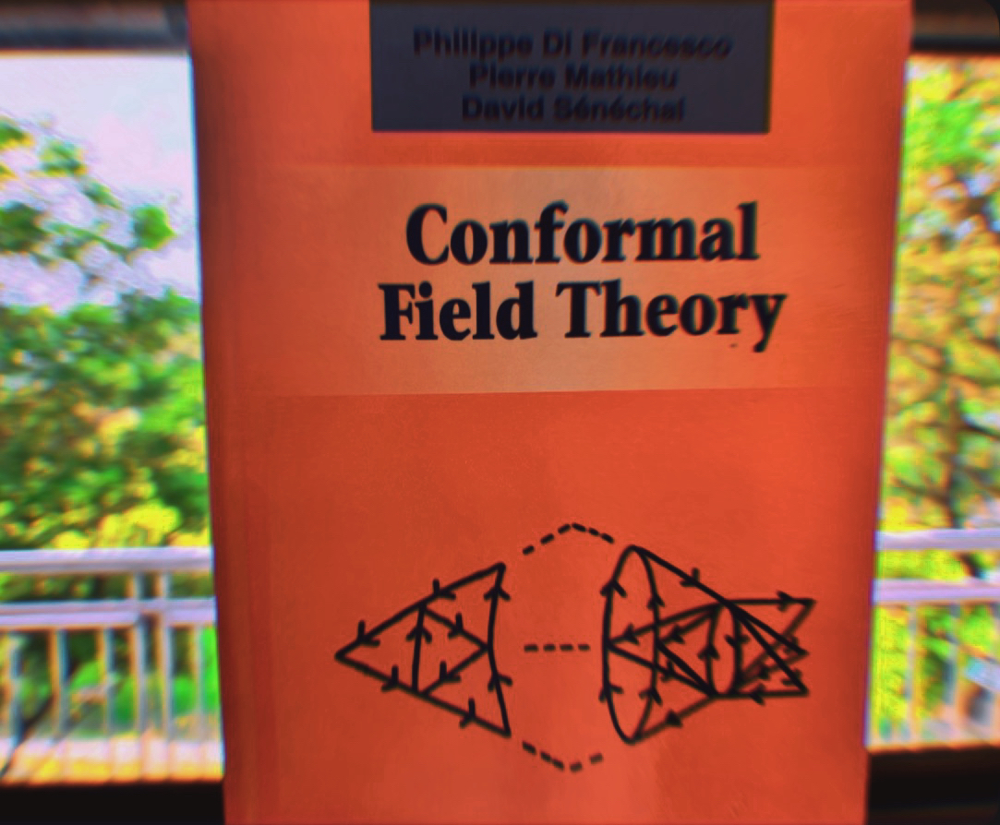

Conformal Field Theory
"The career of a young theoretical physicist consists of treating the harmonic oscillator in ever-increasing levels of abstraction."
— Sidney Coleman, Harvard lectures on QFT.
Course Description
Quantum Field Theory (QFT) unifies quantum mechanics and special relativity into a single theoretical framework that underpins modern high-energy physics and condensed matter theory. The Standard Model of particle physics is built upon QFT, and its applications in condensed matter physics have proven remarkably fruitful. This course develops the mathematical and conceptual foundations of QFT from first principles, emphasizing both computational techniques and physical insight. Topics include canonical quantization, path integrals, propagators, symmetries, gauge fields, and renormalization.

Outline / Syllabus
- Week 1–2: Review of relativistic quantum mechanics and classical field theory
- Week 3–4: Canonical quantization of scalar fields
- Week 5–6: Path integral formulation and generating functionals
- Week 7–8: Interacting fields and Feynman diagrams
- Week 9–10: Gauge symmetry and quantization of the electromagnetic field
- Week 11–12: Non-abelian gauge theories and Yang–Mills fields
- Week 13–14: Renormalization and the renormalization group
- Optional Topics: Spontaneous symmetry breaking, anomalies, effective field theory, and connections to quantum information.
Recommended Reading
- Michael E. Peskin & Daniel V. Schroeder., An Introduction to Quantum Field Theory (Addison-Wesley, 1995).
- Mark Srednicki, Quantum Field Theory (Cambridge University Press, 2007).
- Matthew D. Schwartz, Quantum Field Theory and the Standard Model (Cambridge University Press, 2013).
- Pierre Ramond, Field Theory: A Modern Primer, 2nd ed. (Avalon Publishing 1997).
- Tom Banks, Modern Quantum Field Theory:
A Concise Introduction (Cambridge University Press, 2008).
- Franz Mandl & Graham Shaw, Quantum Field Theory, 3rd Edition. (Wiley, 1st ed, 1975)
- Tom Lancaster & Stephen J. Blundell, Quantum Field Theory for the Gifted Amateur (Oxford University Press, 2014).
- Sidney Coleman, Aspects of Symmetry (Cambridge University Press, 1985).
- Sidney Coleman, Lectures on Quantum Field Theory, (World Scientific Publishing, 2018)
- Steven Weinberg, The Quantum Theory of Fields, Vols. I, , III (Cambridge University Press, 1995–2000).
- Anthony Zee, Quantum Field Theory in a Nutshell (Princeton University Press, 2010).
- Lewis H. Ryder, Quantum Field Theory, 2nd ed. (Cambridge University Press, 1st ed, 1996).
Lecture Notes and Materials
Online Resources
Last updated: October 2025